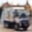
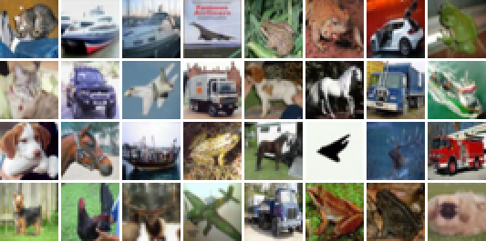
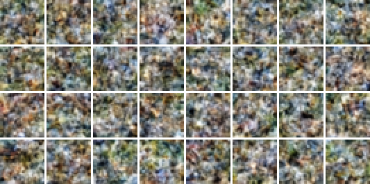

CIFAR-10 原图与重建
同一张 32 × 32 彩色照片，分别压缩到 16 × 16 × 4 和 8 × 8 × 4，再用解码器还原。每种尺寸展示验证集选中的模型。

局部放大
点击原图选择 12 × 12 像素区域，或聚焦原图后用方向键移动。
第一组为官方测试集前 32 张照片。两个解码器各从标准正态分布连续抽取 32 个潜变量，展示全部生成图。这里按组比较外观，图像没有逐张配对。


正在读取测试结果…
10,000 张测试图的重建表现
用每张图的后验均值重建。PSNR、SSIM 越高越好。细节误差衡量原图和重建图相对各自 3 × 3 局部均值的偏差之差，在 0–255 色阶上取平均绝对值，越小越好。
| 潜变量尺寸 | 参数量 | PSNR （dB）↑ | SSIM ↑ | 细节误差 ↓ |
|---|